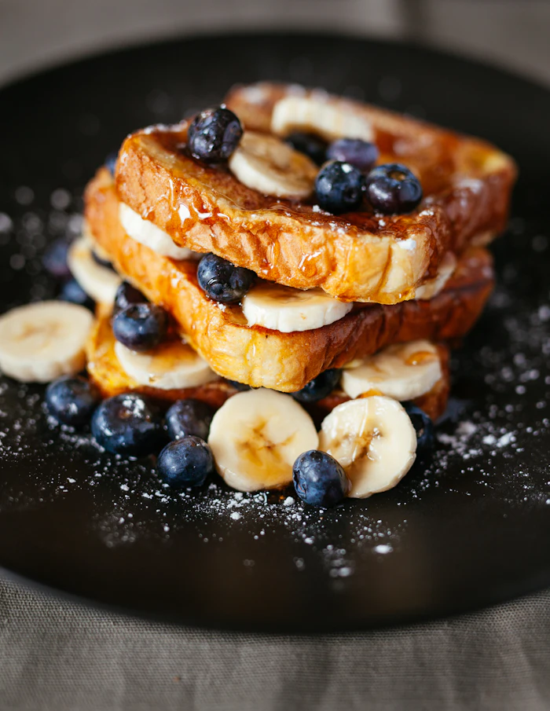
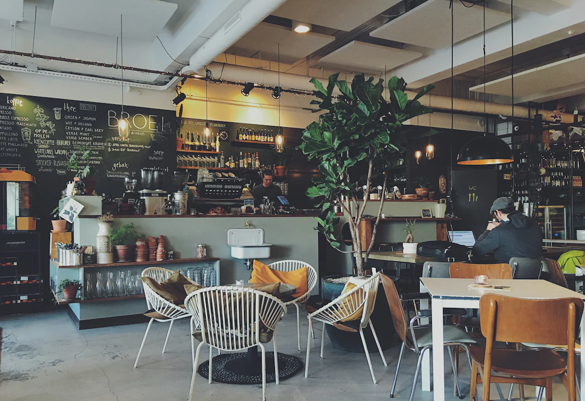
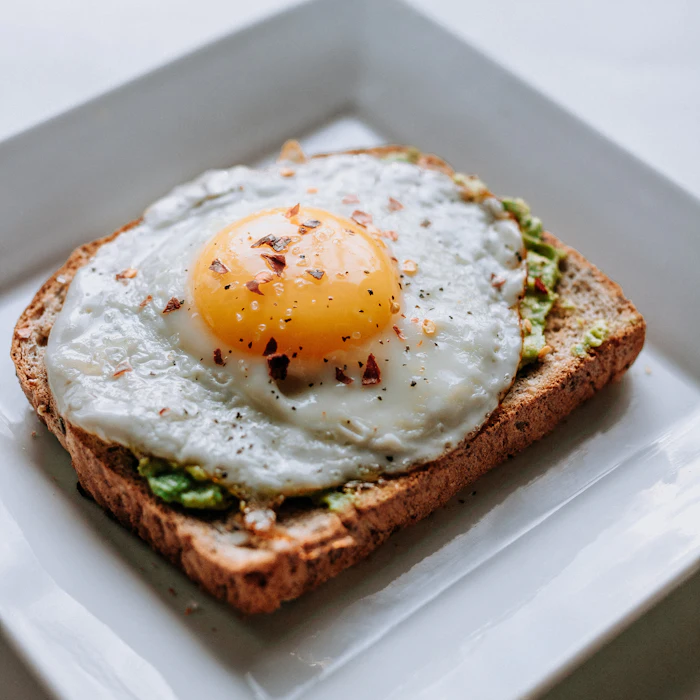
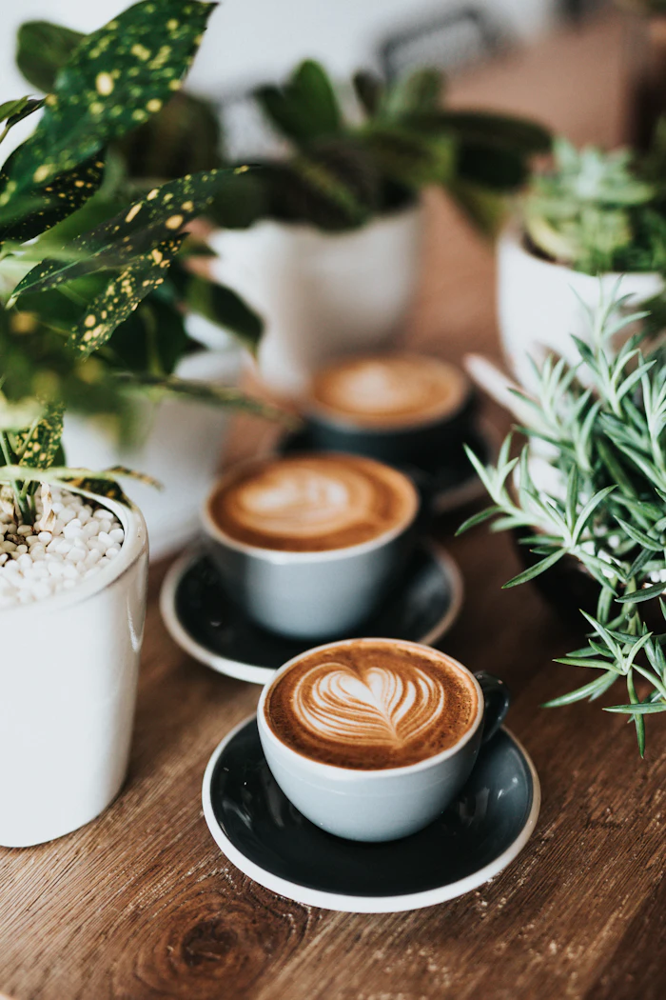

11,50
French Toast
Brioche, Beeren, Ahornsirup
Hausgemachtes Gebäck, Bohnen aus kleiner Röstung und Frühstück bis 15 Uhr – mitten in der Altstadt.


Brioche, Beeren, Ahornsirup

Sauerteig, Avocado, Spiegelei

Unsere Hausröstung, mild und nussig
Weil Sonntag manchmal auch Dienstag ist.
Musterstraße 12
79098 Freiburg